Lootr Remastered
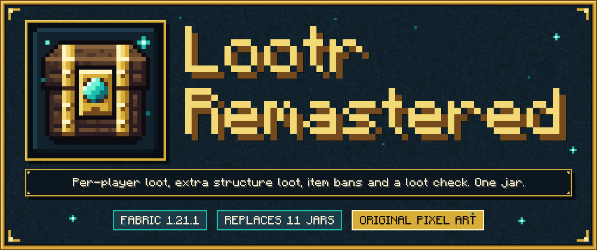
Per-player loot containers, extra loot for structure chests, and a loot table check, in one Fabric mod for Minecraft 1.21.1.
Lootr Remastered is a fork of Lootr. It does what Lootr does, does what the mod Loot Integrations and its add-on packs do, keeps banned items out of loot, fixes and tidies the Lootr core, and has new pixel art for every texture.
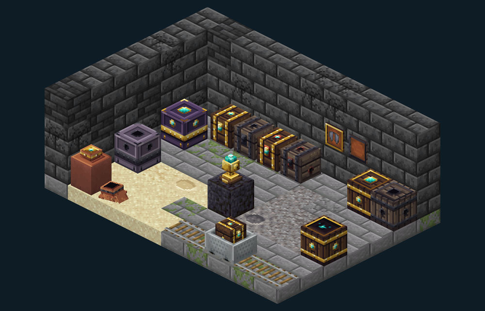
What it does
Every player gets their own loot. A chest, barrel, shulker box, minecart with chest, decorated pot, suspicious sand or gravel, or elytra item frame that has a loot table becomes a Lootr container. Each player who opens it gets an inventory rolled from the loot table, so nobody misses out because someone else was first. Containers can optionally decay or refresh, and teams can share inventories.
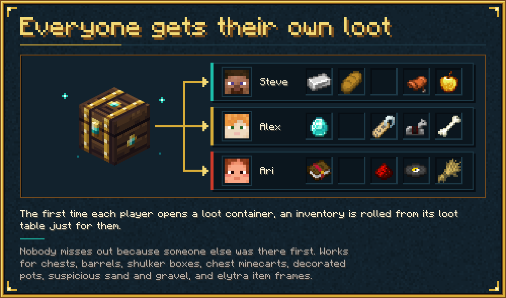
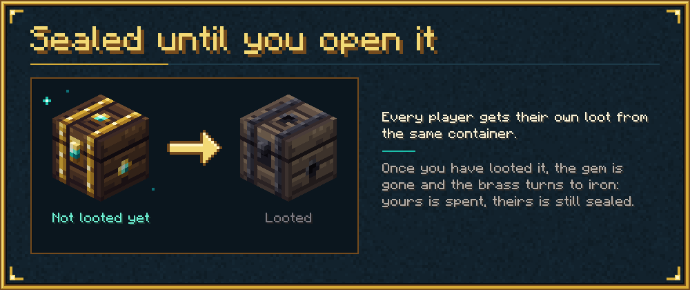
Structure chests get a few extra stacks. Rules in data packs select loot tables (mostly chests of structures). When such a table is rolled, one or two source tables are rolled too and a few of their stacks are added to the result. The original loot is never removed. 6 pools and 51 rule files are built in for vanilla and for many structure mods, and each rule file is active only when the mod it targets is installed. You can add your own pools and rules in any data pack.
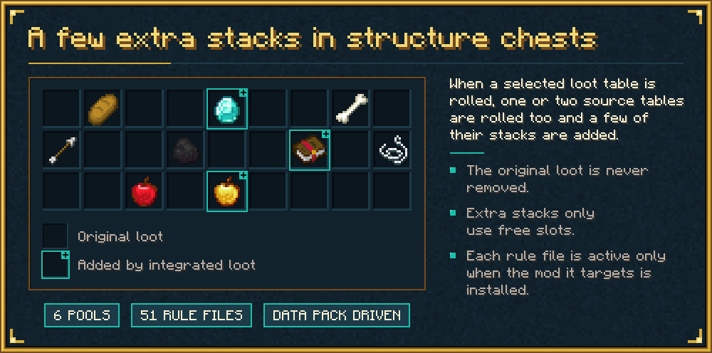
Banned items stay out of loot. If you use Item Obliterator, the items it disables are removed from what a loot table itself rolls (chests, minecart chests, pots, archaeology, mob and block drops, integrated loot) and from stored per-player inventories when these are opened. Stacks that another mod adds after the table's own roll has returned (for example CraftTweaker or Porting Lib loot modifiers, the Aether's) do not pass through this filter; Lootr containers and stored per-player inventories are scrubbed separately in every case. You can also ban items and item tags in this mod's config.
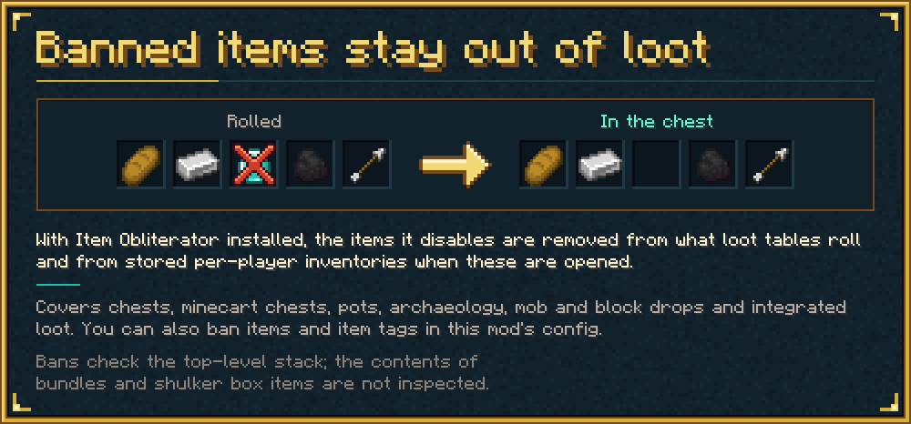
A loot table check. /lootr verify reads the loot tables, structure templates and worldgen files of your whole pack and writes a report to logs/lootr/ (Markdown and JSON, grouped by the mod responsible). It lists loot tables that did not load, references to loot tables that do not exist, entries for banned items (also through nested tables), tables that can never produce anything, and structure chests that get no integrated loot. With /lootr verify rolls 5 it also rolls every structure and chest table five times to find tables that throw errors or never produce an item.
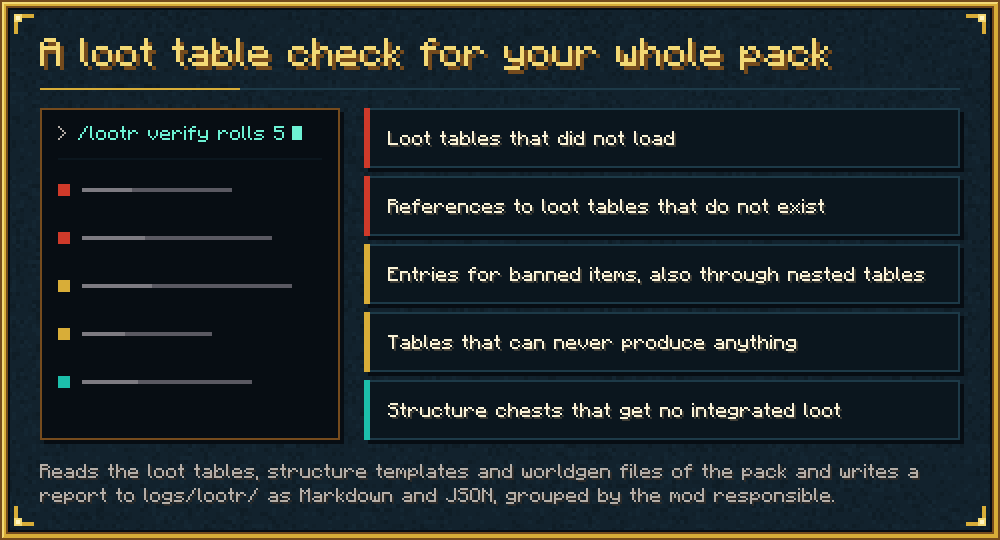
The containers
Every container has two looks: not looted yet (dark timber, brass and a teal gem) and looted (grey timber, dark iron and an empty socket). What you see is your own state; another player still sees it sealed until they have looted it themselves.
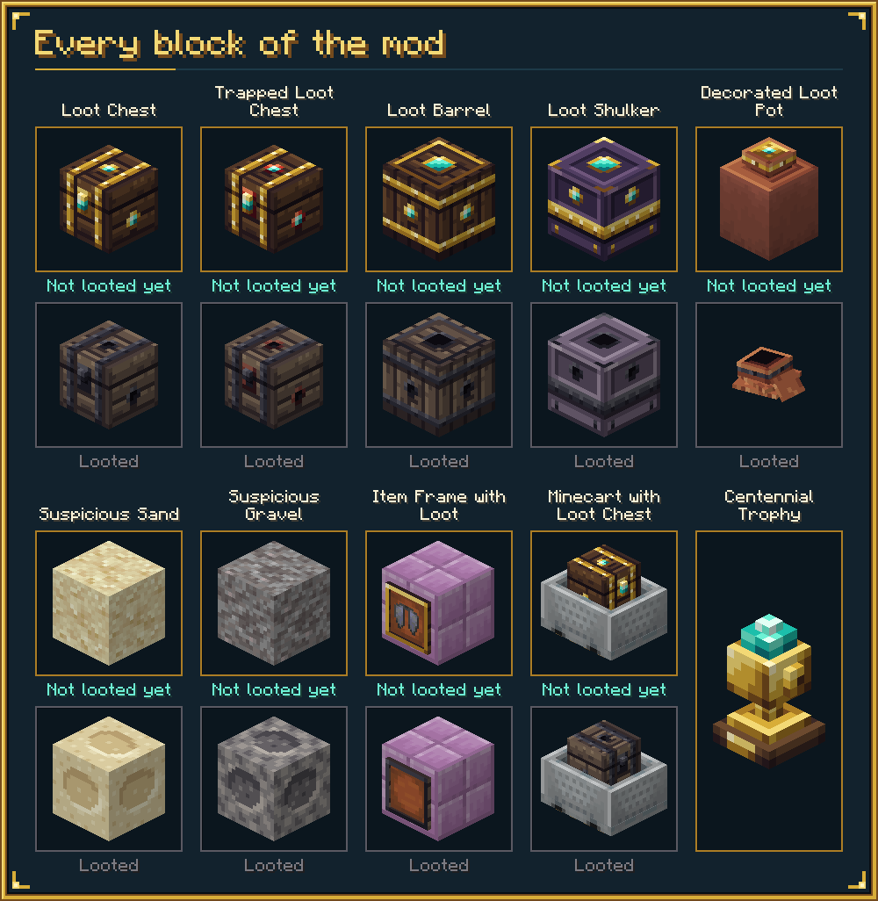
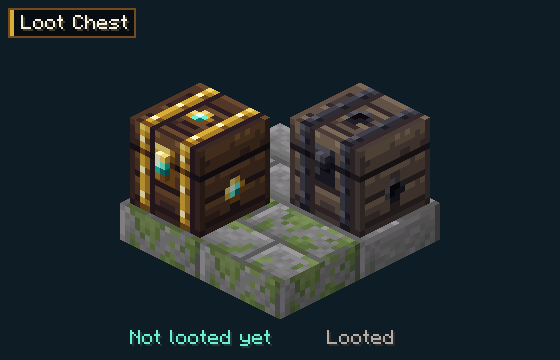
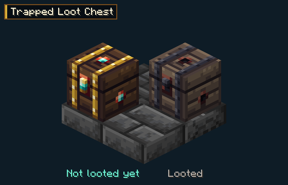
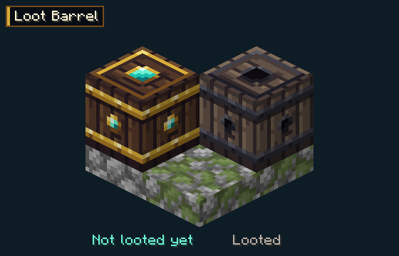
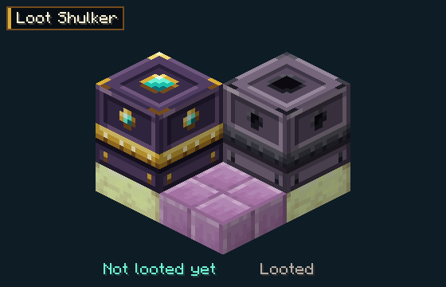
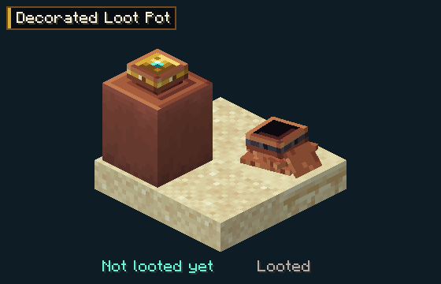
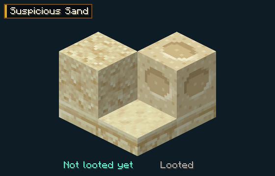
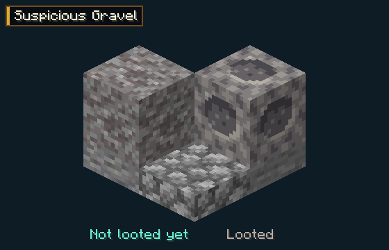
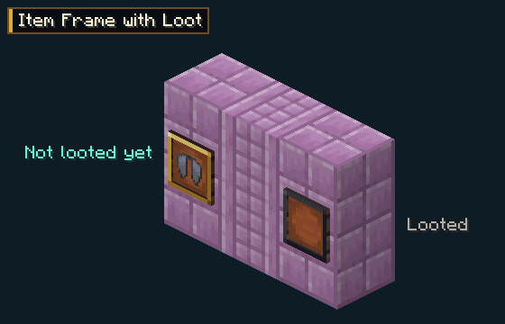
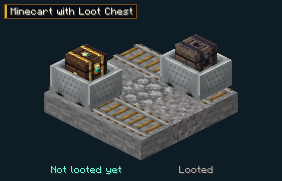
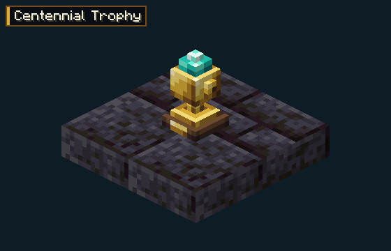
Containers that decay or refresh tell you with a notice:
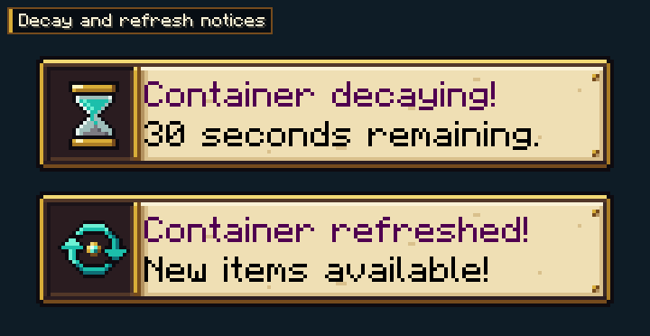
Why one jar
Lootr, Loot Integrations and its add-ons are separate jars. This mod replaces them with one: fewer mods to update, one config file (config/lootr.json), one place where loot is extended, and the loot table check can see all of it. Extra stacks use one or two source rolls per extended roll, are limited by the free slots of the container, and use the random of the roll itself, so a container with a fixed seed stays reproducible.
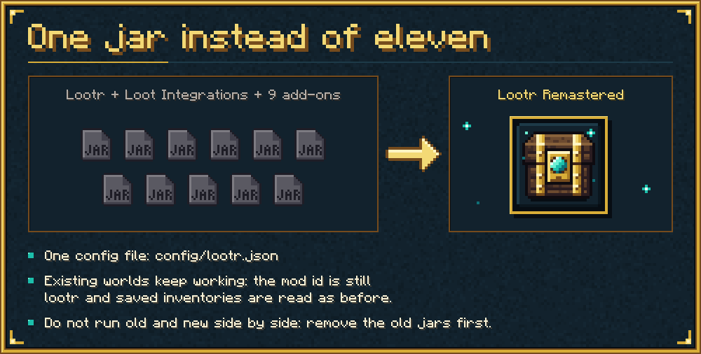
Cost, measured on a server copy of a pack with about 314 server-side jars: rolling an extended chest table took about 20 to 40 microseconds with the mod, of which integrated loot adds 12 to 16, and a roll happens once per player per container. Outside loot rolls a CPU profile found no samples in the mod's code on an idle server or with 4,096 loaded Lootr barrels, and under 1 percent during chunk generation; the figures are from one shared PC and one pack, so treat them as a rough guide.
Requirements
- Minecraft 1.21.1, Fabric Loader 0.17.0 or newer, Java 21
- Fabric API
- Cloth Config API
- Optional: Item Obliterator (item bans), Mod Menu (config screen), Jade (tooltips)
Install on the server and on every client. NeoForge is not supported.
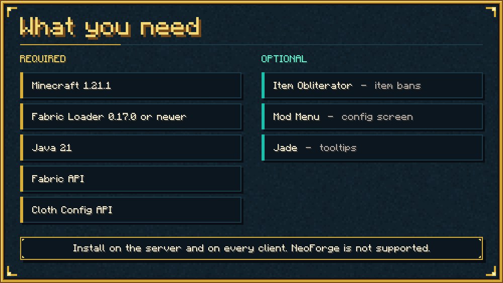
Switching from Lootr and Loot Integrations
- Remove the Lootr jar, the Loot Integrations jar and every Loot Integrations add-on jar from
mods/. Do not run old and new side by side. - Keep Cloth Config. Libraries such as
cupboardmay be needed by other mods; check before you remove them. - Existing worlds keep working: the mod id is still
lootr, saved inventories are read as before, and mods that link against Lootr keep running. config/lootr.jsonkeeps working. Ifconfig/lootintegrations.jsonexists, its four settings (moddedItemWeight,skipExistingItems,skipMapItems,debugOutput) are taken over once and the file is left alone.- The rules of the old add-ons are not read; the built-in rules replace them.
Compatibility notes
- Loot viewers such as EMI Loot and Advanced Loot Info read loot tables statically. They keep working, but they show the tables without the extra stacks of integrated loot.
- Mods that change dimensions or progression (for example Aether, Twilight Forest, Cataclysm, Eternal Starlight, Deeper and Darker) are excluded from integrated loot on purpose.
- The all-loot ban filter covers what a loot table itself rolls, not stacks that other mods add afterwards. If it cannot be applied because another mod changed the loot roll, Lootr logs one warning at start-up and switches it off; Lootr containers are still filtered.
- Bans check the top-level stack only; the contents of bundles and shulker box items are not inspected.
- Config changes on a dedicated server need a restart.
- The full list of limits is in the README on the source page.
Commands
All need operator permission. The most useful ones:
/lootr verifyand/lootr verify rolls <count>: the loot table check./lootr integrated <loot_table>: what integrated loot does to one table./lootr integrated stats: totals./lootr <chest|trapped_chest|barrel|shulker_box|pot|sand|gravel|cart|item_frame> [loot_table]: place or summon a Lootr container./lootr id,/lootr openers <pos>,/lootr open_as <player>,/lootr clear <player>,/lootr refresh,/lootr decay,/lootr cull,/lootr custom-chest <pos>.
Credits and licence
Lootr was written by Noobanidus, with contributions from ZestyBlaze and embeddedt. The idea of integrated loot is that of the mod Loot Integrations by someaddons; this mod contains no code or data of it, everything was written for this mod. Item Obliterator is only called through its public check method. All textures, the icon and the logo are new pixel art by navrelis. Full credits are in CREDITS.md in the repository.
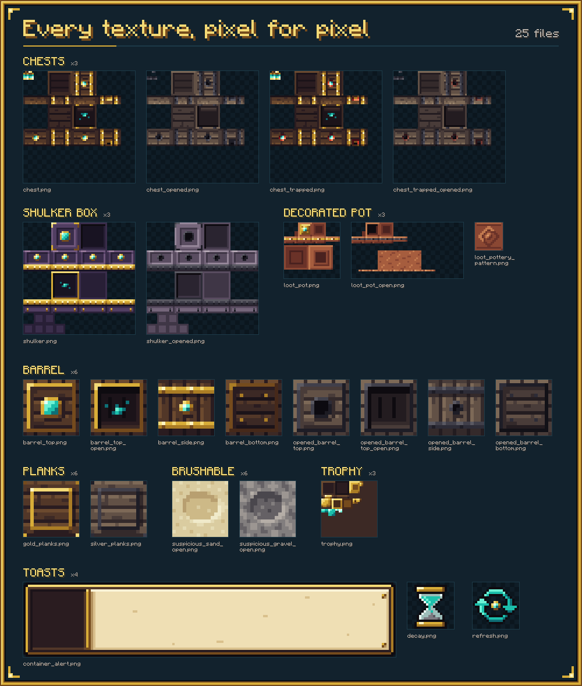
Code, data and art are MIT licensed. Lootr Remastered is not affiliated with Mojang, Microsoft, Noobanidus or the authors of Loot Integrations.
Source and issue tracker: https://github.com/navrelis/LootrRemastered